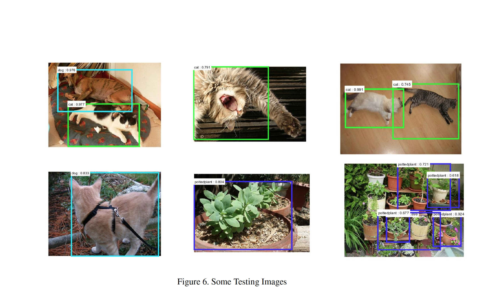
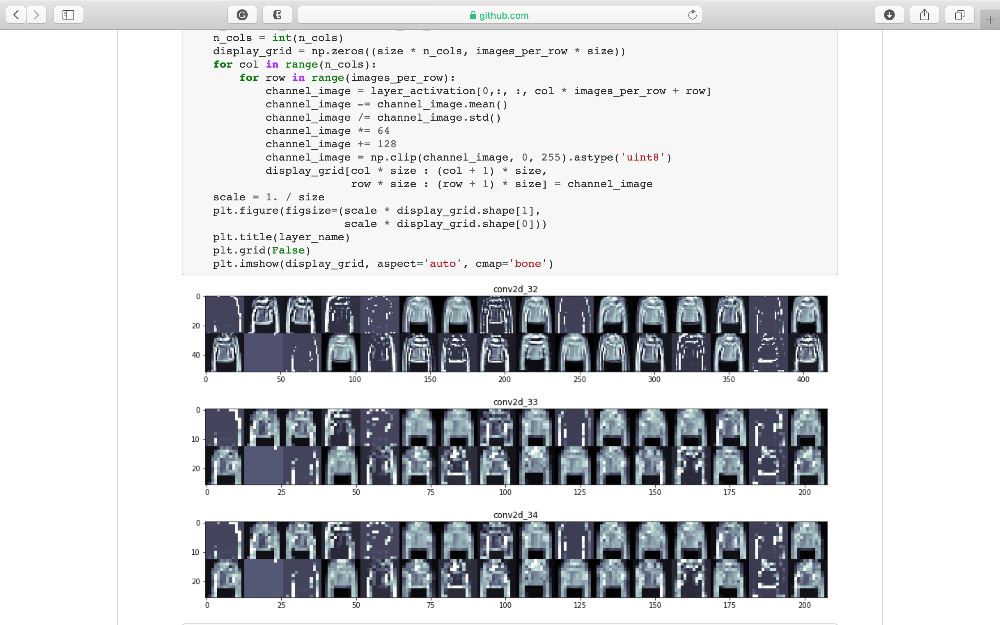
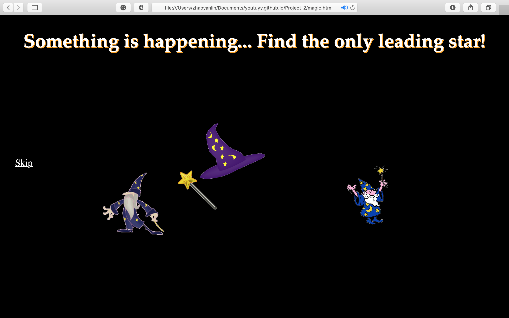

Other
Research

Object Detection with R-FCN
I train R-FCN on the 20 classes of objects in PASCAL VOC dataset with a 50- layer Residual Network (ResNet) as backbone on one GPU. Two region proposal generating algorithms are experimented and visualized for analysis.
- Computer Vision, Neural Networks, MATLAB

Fashion Item Classifier
To classifer 10 classes of clothing items, I apply and compare between logistic regression, MLP and CNN. Data visualization with PCA and tSNE is first undertaken to understand the data. Visualizing the layers of the neural network helps show how CNN learn about the feature.- Computer Vision, Neural Networks, Keras, Python
Design

Magic Decision Maker
It is a website deisgn class project and my first try in website design. It is designed to help users make decisions with the design conveying a sense of magic and fun interaction.
- html, Javascript, css